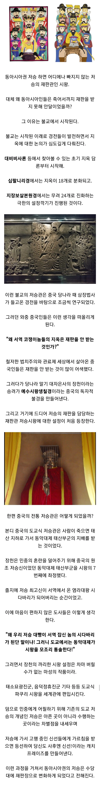

동아시아권 사람들이 죽고 나서 재판 받는 이유
댓글
설정딸이 진짜 재밌는건데
극한의 기독교 설정딸 덕분에 콘스탄틴 영화 같은거도 나온거임
죽은 다음 재판 안받는 세계관이 더 적을껄
재판없으면 그냥 곤충지옥 아닌가요
망치들고 땅땅땅 이라는 관리느낌나는 세부설정에 차이는 있어도
살아있을 때의 일로 죽은 뒤의 운명을 결정한다는 클리셰는 거의 대부분의 문화권에 있움
기독교에서 말하는 천국/지옥도 사후심판 받는 건데 그게 재판 아냐?
기원전 고대 그리스에서도 저승에서 죄에 따라 가는 곳이 달랐음
문명이 세워진 곳에 법이 없는 곳이 어딨냐고... 함무라비 법전이 거의 4천년전인데
자 망자여러분. 여러분이 생전 재판장님 말을 얼마나 잘 들었는지, 재판장님을 얼마나 찬양했는지 알아보겠습니다.
유일신은 엄청 바쁘겟구만 소원도 들어줘야하고 사후심판도 봐줘야되고
그래서 천사와 악마에게 하청 줌
억 그러네 ㅋㅋㅋ
서역 이야기하는거면 본문의 서역은 인도임 유럽이 아니고
코쟁이라고 하길래 그렇게 봤는데 그냥 초기 불교/인도인 지칭한건가
사후 세계에서 평가받아서 가는 세계가 달라지는 것 자체도 이미 일종의 재판이긴 한데
이집트 신화에서도 죽어서 심장의 무게로 재판 받잖아
서양도 천국 지옥 있는거보면 심판이 있는거 같은디
이건 어디나 있는거 아니냐
그래야 피지배계칭이 부당한 고난을 견디면 살아서 천국을보려 하지 않으니까
재미없는 이야기 하나 하자면, 위에서 사례로 든 대비비사론, 십팔니리경, 지장보살원본경 은 모두 초기불교 경전이 아님. 특히 십팔니리경, 지장보살원본경은 모두 대승경전이고 특히 지장보살원본경은 중국에서 만들어진 위경으로 봄. 초기 불교와는 별상관이 없음. 즉 이런 경전은 초기 불교 한참뒤에 만들어진 경전으로, 이때는 불교도 힌두교, 이슬람교의 강세로 인해 기존의 수행중심에서 벗어나 종교적인 색채를 입혀 기존 종교와 대항하려 하던 시기였음. 물론 실패하고 인도에서 불교는 7세기경 거의 완전히 라고 해도 좋을만큼 사라져버림.
추가로, 초기불교에서 지옥은 윤회환생의 한 부분이었지, 지금 우리가 생각하는 염라대왕 나오고 여러 지옥으로 체계적으로 갈라진 지옥도 아니고 더군다나 영원히 머무는 곳도 아니고, 그저 윤회처의 한곳으로, 인연이 다하면 다시 윤회하는 곳에 불과했음.
즉, 초기불교 > 부파 불교 > 그중에서 대승 불교 + 중국 한국 일본등의 문화 짬뽕 이 만들어낸게 오늘날 우리가 불교의 지옥을 연상하게 하는 원본임. 우리가 불교를 오해하는 가장 큰 부분이 초기불교와 대승불교를 섞어서 이야기해와서라서 한번 써봤음.
그래도 인간의 설정놀이는 재밌기는 함.
대승불교는 설정 보는 맛이라면 초기불교는 철학적인 맛이 제일 강한듯
초기 불교는 석가모니 부처님이 당시 사람들이 생각하는 세상의 고통을 어떻게 해결하는지에 대한 해답을 준 부분인거 같음. 여기에도 여러 의견이 있지만, 석가모님 부처님의 해법은, 인간이 자신의 존재를 자각하는 방법은 결국 외부에서 들어오는 자극과 자기 자신안의 업 (경험에 의해 고착화된 생각) 이 반응하며 끊임없이 '나' 라는것을 강화해서 생기는 것인데, 실제로 그것은 존재하는 것이 아니고 외부의 자극과 나의 경험이 만나서 만들어지는, 그저 나의 착각에서 비롯된 것이므로, 이것을 깨달으면 '나' 라는 생각이 없어지고, 따라서 '내가 받을 생노병사로 이어지는 연기가 없어진다' 라는 것임. 그런데 이게 기존 종교와는 크게 다른 부분이고 믿고 의지할 대상이 초기불교에서는 없으니, 이후 대승에서 보살이 만들어지고 기타 등등 각지의 문화적 전통이 섞이다 지금의 한국 불교, 중국 불교, 일본 불교가 만들어졌다고 보임.
쓰고나니 재미없네
현대인들은 공감이 안되는데 저 시대에서 절차적으로 공정한 재판이라도 받을수 있는건 일부 상위계층뿐이었음. 저런 설정으로 적어도 죽음은 위아래가 없다는 개념으로 승화하기 시작한거지 그 전에는 죽음조차 위아래가 다른 개념이었고.
초기불교가 제일 재밌지 설정딸 치니까 존나 재미 없어짐